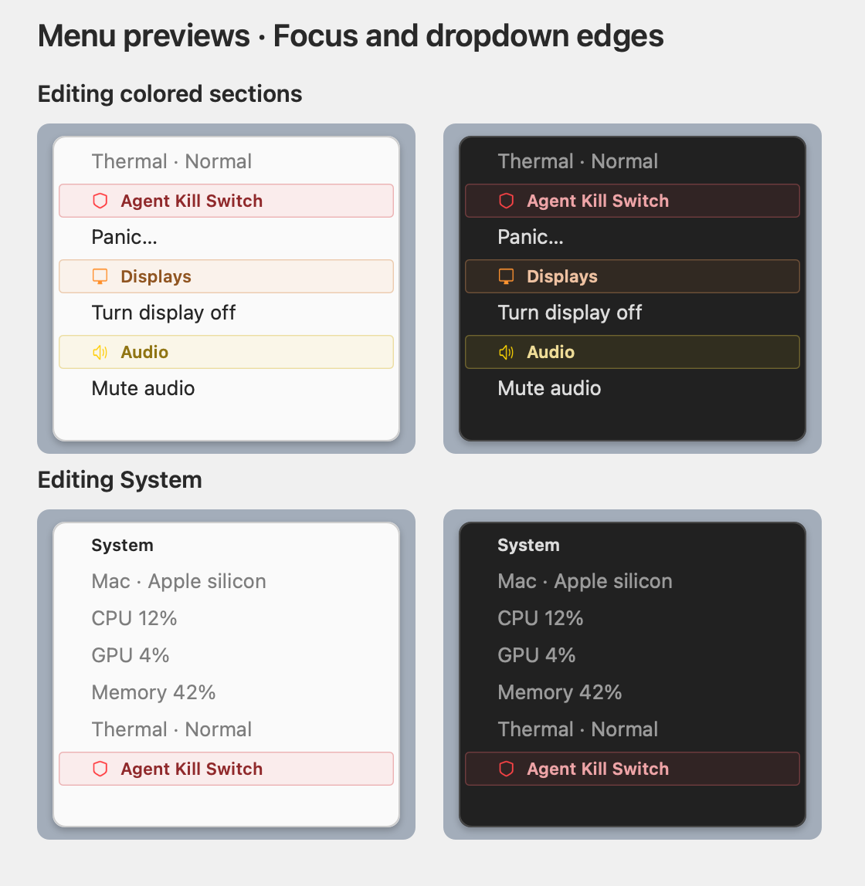

Your sleep
Lid and power-aware keep awake
Keep a closed Mac awake on power, let battery sleep happen safely, and use a one-time meeting delay when you need a little longer.
Keep it awake when you need it. Switch your desk. Make your keyboards and mice behave the way you expect. Stop a runaway agent before it gets away from you.

Perch brings the small utilities and the important safeguards into one place, with the state visible when you need it.
Keep a closed Mac awake on power, let battery sleep happen safely, and use a one-time meeting delay when you need a little longer.
Map your computers and physical screens, switch desk presets, and move keyboard and pointer control across the desk.
Keep monitor inputs, physical layout, and active routing together instead of hunting through separate display utilities.
Set up external keyboards and mice without changing how the built-in laptop keyboard and trackpad behave.
Track agent harnesses and their children, including orphaned descendants, so an emergency stop is there when you need it.
See CPU, GPU, memory, thermal pressure, audio, and the other small system checks you otherwise open several utilities to find.
Perch is currently for Apple silicon Macs running macOS 26 or later. Other platforms can have their own instructions when they are ready.
Download the DMG, move Perch to Applications, then open that copy from Finder.
Download DMGInstall the same public release from the maintained Perch tap.
brew tap itscool/tap
brew install --cask itscool/tap/perchDirect Desk routing, clearer readiness states, and a complete release history inside Settings → Updates.